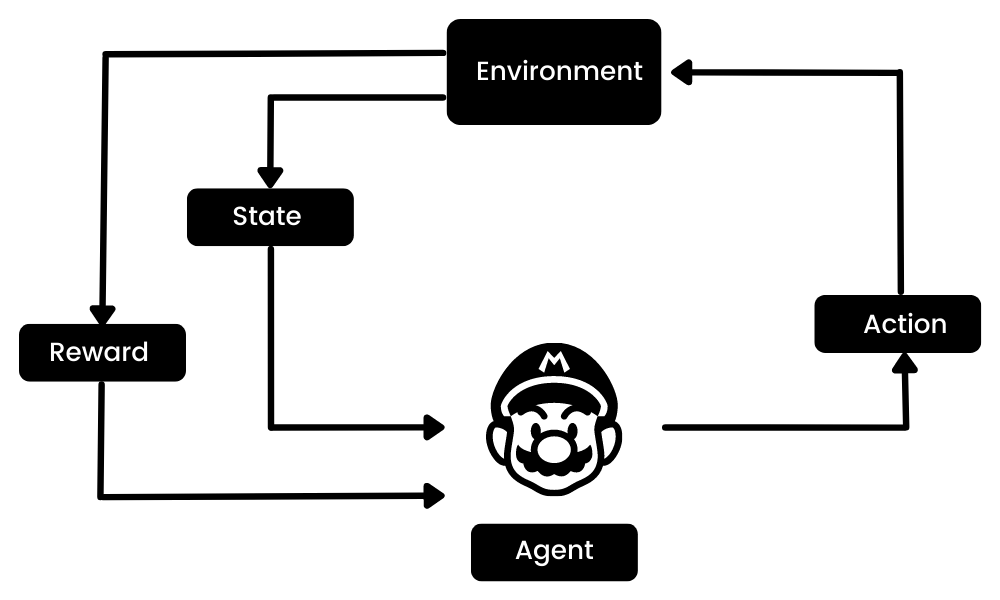
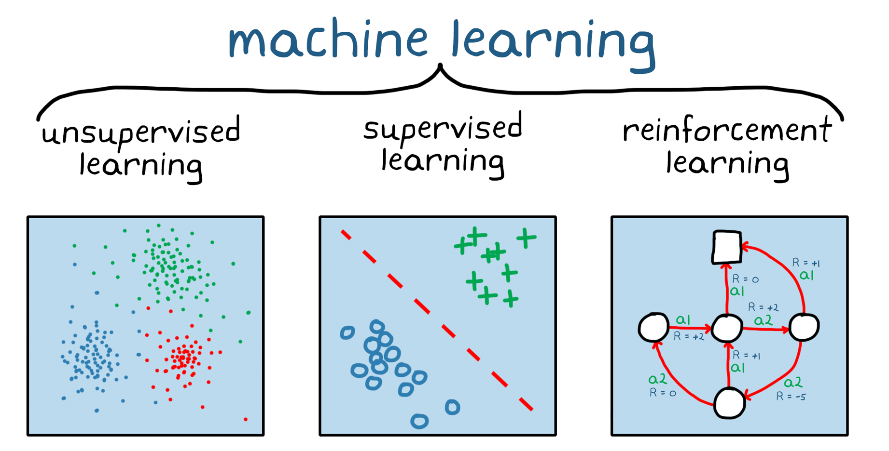

Aprendizaje por Refuerzo
Por Jorge Linares López
Introducción al Aprendizaje por Refuerzo
El aprendizaje por refuerzo (RL) es un paradigma de aprendizaje automático que enseña a los agentes cómo tomar decisiones óptimas a través de la interacción con su entorno. A diferencia de otros métodos de aprendizaje, el RL no se basa en datos previamente etiquetados, sino que utiliza un sistema de recompensas y penalizaciones para fomentar ciertos comportamientos.
Definición y Conceptos Básicos
El RL se basa en la interacción entre un agente y su entorno. El agente realiza acciones y el entorno responde con cambios de estado y recompensas. El objetivo del agente es maximizar la suma de las recompensas, lo que a menudo implica un equilibrio entre la exploración de acciones desconocidas y la explotación del conocimiento actual.

Diferencias entre RL y Otros Tipos de Aprendizaje Automático
-
Aprendizaje Supervisado: Se basa en un conjunto de datos con entradas y salidas etiquetadas. El modelo aprende a predecir la salida a partir de la entrada.
-
Aprendizaje No Supervisado: Trabaja con datos sin etiquetar y busca patrones o estructuras subyacentes en los datos.
-
Aprendizaje por Refuerzo: No utiliza un conjunto de datos etiquetados. En cambio, el agente interactúa con su entorno y aprende de las consecuencias de sus acciones.

Componentes Fundamentales del RL
Agente
El agente es el protagonista en el aprendizaje por refuerzo, equipado con sensores para percibir el estado del entorno y actuadores para realizar acciones. Su objetivo es aprender una política que le permita acumular la mayor cantidad de recompensas posibles a lo largo del tiempo. El agente puede ser simple, como un programa de software que juega al ajedrez, o complejo, como un robot autónomo que navega por terrenos desconocidos.
Entorno
El entorno representa todo lo que rodea al agente y con lo que este puede interactuar. Es dinámico y puede cambiar con cada acción que el agente realiza. En algunos casos, el entorno también incluye otros agentes con los que se puede competir o colaborar. Por ejemplo, en un juego de estrategia, el entorno incluiría no solo el tablero de juego sino también los movimientos de los oponentes.
Estado
El estado es una instantánea del entorno en un momento dado. Cada estado contiene información que el agente utiliza para tomar decisiones. En entornos complejos, el estado puede ser una combinación de varias variables, como la posición de todos los jugadores en un campo de fútbol, junto con la posición del balón.
Acciones
Las acciones son las intervenciones que el agente puede realizar para influir en el entorno. Pueden ser discretas, como mover una pieza en un juego de mesa, o continuas, como ajustar la velocidad de un vehículo. La selección de acciones es crucial, ya que determina la trayectoria del agente hacia el éxito o el fracaso.
Recompensas
Las recompensas son la retroalimentación que el agente recibe del entorno como resultado de sus acciones. Son fundamentales para el aprendizaje, ya que guían al agente hacia comportamientos beneficiosos. Las recompensas pueden ser inmediatas, como el puntaje obtenido después de una jugada en un juego, o diferidas, acumulándose a lo largo del tiempo para reflejar el éxito a largo plazo.
Estos componentes trabajan en conjunto dentro del marco del aprendizaje por refuerzo, creando un ciclo de retroalimentación donde el agente aprende a través de la prueba y error, ajustando constantemente su comportamiento para mejorar su rendimiento en la tarea asignada.
Principios del Aprendizaje por Refuerzo
Exploración vs. Explotación
La exploración implica que el agente pruebe nuevas acciones para descubrir recompensas desconocidas, mientras que la explotación significa que el agente elige acciones basadas en experiencias pasadas para maximizar la recompensa. La clave está en encontrar un equilibrio entre explorar suficientemente el entorno y explotar el conocimiento adquirido para tomar decisiones óptimas.
Política
Una política en RL es una estrategia que define cómo el agente debe actuar en cada estado. Puede ser determinista, donde una acción específica se elige para un estado dado, o estocástica, donde se asignan probabilidades a las acciones posibles.
Función de Valor
La función de valor evalúa lo bueno que es estar en un estado o realizar una acción en un estado dado, con respecto a la cantidad de recompensa que el agente puede esperar obtener en el futuro. La función de valor de estado, ( V(s) ), y la función de valor de acción, ( Q(s, a) ), son fundamentales para determinar la política óptima.
Función de Recompensa
La función de recompensa asigna una recompensa (o penalización) a cada acción que el agente toma en un estado específico. El objetivo del agente es maximizar la suma de estas recompensas a lo largo del tiempo, lo que guía al agente hacia comportamientos que se consideran óptimos dentro del entorno.
Estos principios son esenciales para comprender cómo los agentes de RL aprenden a través de la interacción con su entorno y cómo mejoran sus políticas para lograr objetivos a largo plazo. Para una comprensión más profunda, te recomiendo revisar los artículos mencionados y otros recursos educativos que ilustren estos conceptos con ejemplos y diagramas.
Algoritmos de Aprendizaje por Refuerzo
Q-Learning
El Q-Learning es un enfoque prominente en el aprendizaje por refuerzo que no depende de un modelo previo del entorno. Funciona estimando la calidad de las acciones, conocida como la Q-función, que representa el valor esperado de la recompensa total a partir de un estado y acción dados. El agente utiliza esta función para seleccionar la acción que maximiza la recompensa futura esperada. Este método es particularmente útil en entornos con transiciones y recompensas estocásticas, ya que el agente aprende la política óptima a través de la experiencia directa.
Aprendizaje por Diferencias Temporales (TD Learning)
El TD Learning es una familia de algoritmos de aprendizaje por refuerzo que aprenden directamente de la experiencia sin necesidad de un modelo del entorno. Estos algoritmos actualizan las estimaciones de la función de valor después de cada paso de tiempo, utilizando la diferencia entre las predicciones consecutivas, conocida como el error de diferencia temporal. Esto permite al agente ajustar sus predicciones sobre la marcha y es especialmente útil para problemas donde el resultado final no se conoce hasta el final del episodio.
Política Gradiente
Los métodos de Política Gradiente se centran en ajustar directamente los parámetros de la política del agente. En lugar de estimar valores para cada acción, estos métodos calculan el gradiente del rendimiento esperado y utilizan este gradiente para actualizar la política en una dirección que aumenta las recompensas. Estos algoritmos son potentes porque pueden manejar espacios de acción continuos y políticas estocásticas.
Actor-Crítico
Los métodos Actor-Crítico combinan las ventajas de los métodos basados en políticas y basados en valores. El ‘actor’ se refiere a la parte del algoritmo que selecciona las acciones (la política), mientras que el ‘crítico’ evalúa las acciones seleccionadas por el actor (la función de valor). Al trabajar juntos, el actor y el crítico proporcionan un mecanismo de retroalimentación interna que ayuda al agente a aprender tanto la política como la función de valor, lo que puede conducir a un aprendizaje más eficiente y estable.
Deep Reinforcement Learning (DRL)
El DRL es la frontera del aprendizaje por refuerzo, donde se utilizan redes neuronales profundas para manejar entornos de alta dimensión y complejidad. Esta integración permite a los agentes aprender directamente de datos sensoriales sin procesar, como imágenes y secuencias de audio, lo que abre nuevas posibilidades en campos como la visión por computadora y el procesamiento del lenguaje natural.
Integración de redes neuronales profundas con RL
La integración de redes neuronales profundas con RL permite a los sistemas aprender representaciones de datos complejas y realizar tareas que antes requerían una ingeniería de características detallada. Las redes neuronales actúan como aproximadores de funciones que pueden estimar políticas óptimas o funciones de valor a partir de grandes cantidades de datos de entrada.
DQN (Deep Q-Network)
El DQN fue uno de los primeros algoritmos de DRL en alcanzar un rendimiento superhumano en varios juegos de Atari 2600. Utiliza una técnica conocida como “experience replay” para almacenar las experiencias pasadas del agente y “target networks” para estabilizar los objetivos de aprendizaje durante el entrenamiento.
A3C (Asynchronous Advantage Actor-Critic)
El A3C introduce un enfoque paralelo y asincrónico al entrenamiento de agentes de RL. Múltiples agentes exploran diferentes copias del entorno simultáneamente, lo que acelera el proceso de aprendizaje y aumenta la robustez de la política aprendida. El A3C también utiliza una estimación del valor de ventaja para reducir la varianza en el entrenamiento.
Aplicaciones del DRL
Las aplicaciones del DRL son diversas y están creciendo rápidamente. Incluyen:
- Juegos y simulaciones: Donde los agentes aprenden a jugar y superar juegos complejos.
- Robótica: Para el control autónomo y la navegación en entornos no estructurados.
- Optimización de sistemas: Como la gestión de recursos y la logística.
Desafíos y Consideraciones Éticas
El DRL enfrenta varios desafíos, como la necesidad de grandes cantidades de datos para el entrenamiento y la dificultad de generalizar a nuevas tareas. Además, existen consideraciones éticas importantes, especialmente cuando los agentes de RL toman decisiones que afectan a seres humanos.
Futuro del DRL
El futuro del DRL es prometedor, con investigaciones en curso que buscan mejorar la eficiencia, la generalización y la transferencia de aprendizaje. El impacto potencial en la sociedad y la industria es significativo, con la posibilidad de transformar numerosos campos.
El DRL es un área de investigación activa y emocionante en IA, con el potencial de resolver problemas complejos y mejorar la toma de decisiones autónomas.
Aplicaciones Avanzadas del RL
El aprendizaje por refuerzo (RL) se ha convertido en una herramienta poderosa en muchos campos, no solo por su capacidad para resolver problemas complejos, sino también por su flexibilidad para adaptarse a diferentes entornos y objetivos.
Juegos y Simulaciones
- Juegos de Estrategia: El RL ha sido utilizado para desarrollar agentes que pueden planificar y ejecutar estrategias complejas en juegos como el ajedrez y StarCraft.
- Simulaciones de Entrenamiento: Se utiliza para crear simulaciones que entrenan modelos predictivos, lo que es especialmente útil en la formación de pilotos y personal militar.
Robótica
- Manipulación y Control: Los robots entrenados con RL pueden aprender tareas de manipulación delicadas, como la cirugía robótica o el ensamblaje de componentes electrónicos.
- Interacción Social: Los robots sociales utilizan RL para mejorar su interacción con humanos, aprendiendo a interpretar gestos y expresiones faciales.
Optimización de Sistemas
- Redes de Energía: El RL ayuda a optimizar la distribución y el consumo de energía en redes inteligentes, mejorando la eficiencia y reduciendo los costos.
- Control de Tráfico: Se aplica para mejorar los sistemas de control de tráfico, reduciendo la congestión y aumentando la seguridad vial.
Medicina
- Diagnóstico Automatizado: El RL se utiliza para mejorar los sistemas de diagnóstico automático, ayudando a identificar enfermedades a partir de imágenes médicas con mayor precisión.
- Terapia Personalizada: Puede contribuir a la personalización de tratamientos médicos, ajustando las terapias a las necesidades individuales de los pacientes.
Finanzas
- Comercio Algorítmico: El RL se emplea en el comercio financiero para desarrollar estrategias de inversión que se adaptan a las condiciones cambiantes del mercado.
- Gestión de Riesgos: Ayuda a las instituciones financieras a modelar y gestionar el riesgo de manera más efectiva.
Descubrimiento de Fármacos
- Diseño de Moléculas: El RL puede acelerar el descubrimiento de nuevos fármacos al optimizar la búsqueda de moléculas con propiedades deseables.
Entretenimiento
- Realidad Virtual y Aumentada: El RL se utiliza para crear experiencias más inmersivas y personalizadas en la realidad virtual y aumentada.
Estas aplicaciones demuestran la capacidad del RL para aprender y adaptarse a una amplia gama de desafíos, lo que lo convierte en una herramienta valiosa en la búsqueda de soluciones innovadoras en múltiples industrias.
Desafíos y Consideraciones Éticas
El aprendizaje por refuerzo (RL) presenta desafíos éticos significativos, especialmente en el contexto educativo. La privacidad de los datos, los sesgos algorítmicos, y la transparencia son preocupaciones primordiales. Es crucial que los algoritmos sean justos, transparentes y seguros para proteger la privacidad y garantizar la equidad.
Complejidad Computacional en Aprendizaje por Refuerzo
La complejidad computacional en RL se refiere a la cantidad de recursos necesarios para entrenar modelos de IA. Los desafíos incluyen el alto costo computacional y la necesidad de algoritmos eficientes para manejar problemas complejos.
Generalización y Transferencia de Aprendizaje en RL
La generalización implica la capacidad de aplicar conocimientos aprendidos a nuevos contextos, mientras que la transferencia se refiere a cómo el aprendizaje previo afecta la adquisición de nuevos conocimientos. Ambos son fundamentales para el éxito del RL en aplicaciones prácticas.
Aspectos Éticos en la Toma de Decisiones Autónomas en IA
La toma de decisiones autónomas por parte de sistemas de IA plantea interrogantes éticos relacionados con la transparencia, la privacidad y la responsabilidad. Es esencial que las aplicaciones de IA estén alineadas con valores humanos fundamentales para evitar la reproducción de prejuicios y la discriminación.
Futuro del Aprendizaje por Refuerzo
El futuro del aprendizaje por refuerzo (RL) se presenta prometedor y está en constante evolución. La investigación actual se centra en desarrollar algoritmos más avanzados y en expandir las aplicaciones del RL a áreas como la atención médica, la energía y la educación. Los avances en la computación y el acceso a grandes volúmenes de datos están permitiendo un rápido progreso en esta área. Se espera que el RL continúe revolucionando el campo del aprendizaje automático, ofreciendo nuevas y emocionantes posibilidades de aplicación.
Conclusión
El aprendizaje por refuerzo es una técnica de machine learning que ha demostrado ser poderosa para entrenar software que toma decisiones autónomas para lograr resultados óptimos. Imita el proceso de aprendizaje por ensayo y error que los humanos utilizan para lograr sus objetivos, y se destaca por su eficacia en entornos complejos y su capacidad para optimizar según objetivos a largo plazo. A medida que avanzamos, es fundamental aplicar estos principios correctamente y considerar las implicaciones éticas en su uso. El RL no solo fortalece los comportamientos deseados en sistemas de IA, sino que también tiene el potencial de transformar numerosos campos, mejorando la vida cotidiana y abriendo nuevas fronteras en la tecnología.